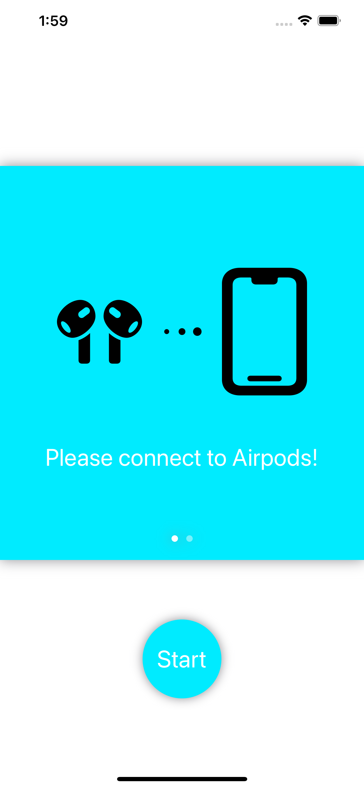
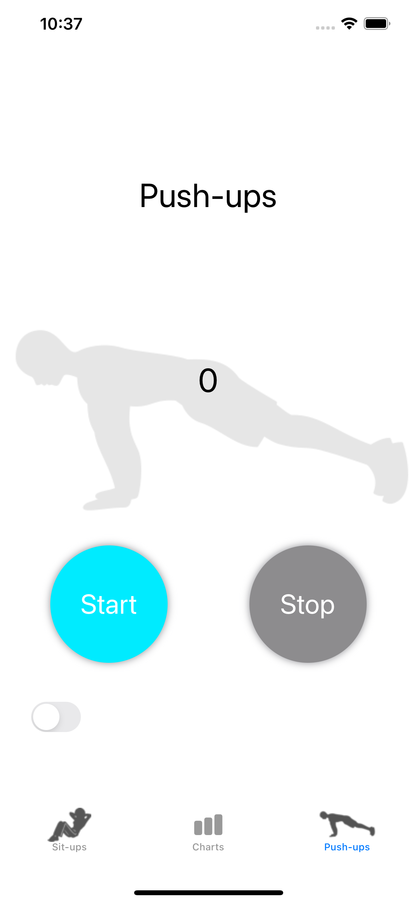
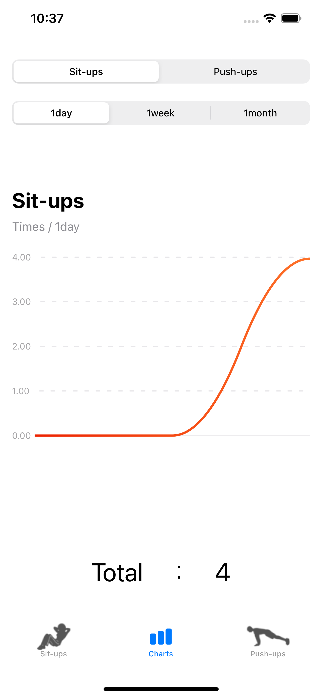
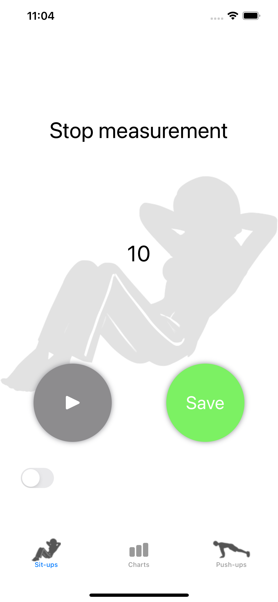
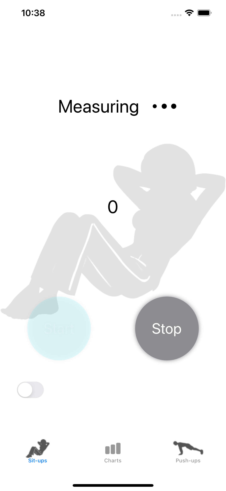
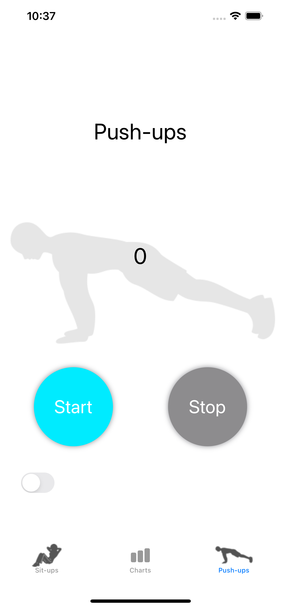
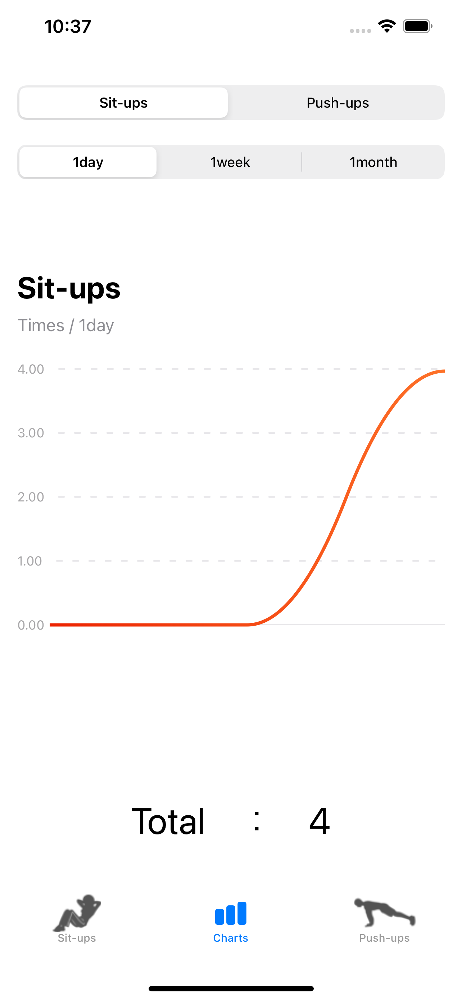
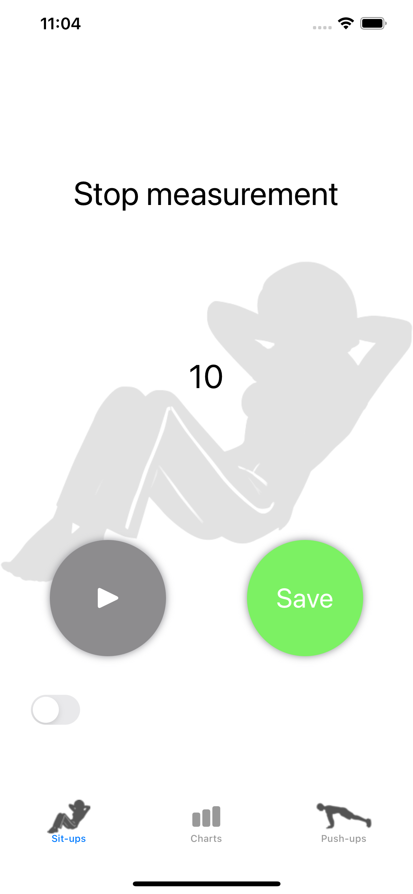
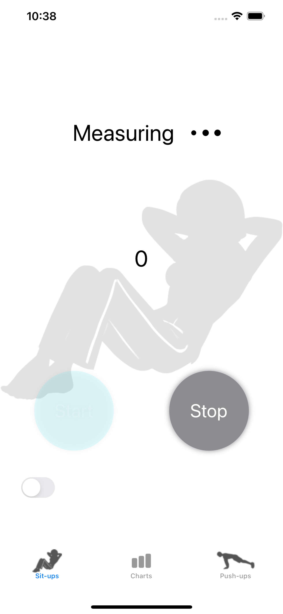

Muscle training counter/h1>

Muscle training counter
Airpods(加速度センサーがついているもの)をつけることで、腹筋,腕立てを自動でカウントしてくれます。
Airpodsが接続されていることを確認してください。
Startを押すと計測が開始されます。腹筋（腕立て）を行うとカウントされます。
Airpodsがない場合でも手動で入力することができます。
Saveを押すと回数が保存され,日ごと,週ごと,月ごとにグラフ化されます

 







Muscle training counter
Airpods(加速度センサーがついているもの)をつけることで、腹筋,腕立てを自動でカウントしてくれます。
Airpodsが接続されていることを確認してください。
Startを押すと計測が開始されます。腹筋（腕立て）を行うとカウントされます。
Airpodsがない場合でも手動で入力することができます。
Saveを押すと回数が保存され,日ごと,週ごと,月ごとにグラフ化されます
何か不明な点がございましたらお問い合わせください。 e-mail:kanbe5631@gmail.com